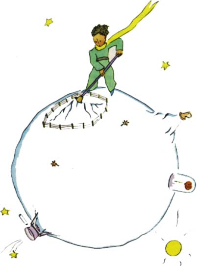

Malý princ vytrhl trochu smutnì také poslední výhonky baobabù. Myslel, ¾e se snad u¾ nikdy nevrátí. Ale v¹echny tyto obvyklé práce se mu zdály toho rána nesmírnì milé. A kdy¾ naposledy zalil kvìtinu a chystal se ji zakrýt poklopem, zjistil, ¾e je mu do pláèe.

"Sbohem," øekl kvìtinì.
Kvìtina v¹ak neodpovìdìla.
"Sbohem," opakoval.
Kvìtina zaka¹lala. Ale ne proto, ¾e byla nachlazená.
"Byla jsem hloupá," øekla mu koneènì. "Odpus» mi to. Sna¾ se být ¹»asten."
Byl pøekvapen, ¾e mu nic nevyèítá. Stál tu ve velkých rozpacích, s poklopem v ruce. Nechápal tu klidnou mírnost.
"No ano, mám tì ráda," øekla kvìtina. "Tys o tom vùbec nevìdìl. A byla to má chyba. To nevadí. Ale tys byl zrovna tak hloupý jako já. Hleï, abys byl ¹»asten... Nech ten poklop, já u¾ ho nechci."
"Ale vítr..."
"Nejsem tak nachlazená... Èerstvý noèní vítr mi udìlá dobøe. Jsem pøece kvìtina."
"Ale zvíøata..."
"Musím pøece snést dvì nebo tøi housenky, kdy¾ chci poznat motýly. Je prý to tak krásné. Kdo by mì jinak nav¹tìvoval? Ty bude¹ daleko. Velkých zvíøat se vùbec nebojím. Mám drápy."
A naivnì ukázala ètyøi trny. Potom dodala:
"Neotálej tolik, rozèiluje mì to. Rozhodl ses odejít, tak jdi!"
Nechtìla toti¾, aby ji vidìl plakat. Byla to nesmírnì py¹ná kvìtina.